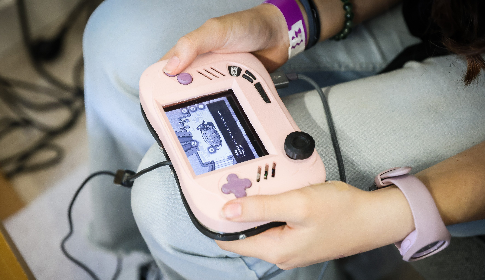

TimeWeaver
contrôleur alt
& narration
TimeWeaver est un projet réalisé sur une période de 3 mois en fin de mon Master 1 à l’ENJMIN. Nous étions un groupe de 7 personnes, dont 3 qui travaillaient à mis temps :
Tristan et Maxime : nos deux game designers et pitcheurs du projet se chargeaient du design des puzzles de la narration et de l’intégration dans le moteur.
Zoé : notre game artist s’est chargé de la réalisation des visuels du jeu en pixel art se trouvant dans la console.
Hugo : notre sound designer a pensé et composé l’ensemble des musiques et bruitages sonores présents dans le jeu.
Théo : notre programmeur s’est chargé du développement du software et supervisait l’architecture électronique de la console.
Lucas : notre manager encadrait l’équipe, la distribution de notre travail et était chargé des commandes des composants électroniques.
TimeWeaver est un projet réalisé sur une période de 3 mois en fin de mon Master 1 à l’ENJMIN. Nous étions un groupe de 7 personnes, dont 3 qui travaillaient à mis temps :
Moi-même : en tant qu’ergonome et UX designer, je travaillais très proche des game designer pour penser l’expérience et nous assurer que les utilisateurs la percevaient réellement comme espéré. J’ai également joué le rôle de designer objet, concevant l’esthétique de la console, me chargeant de son impression en 3D et du montage électronique complexe se trouvant à l’intérieur.


Une approche expérimentale
Le projet s'appuie sur une démarche de recherche et d'expérimentation. Les différentes propositions sont conçues pour interroger les usages, les gestes et les interactions entre l'utilisateur et l'objet.
De l'idée à la matière
La matérialisation des concepts permet de confronter les intentions initiales aux contraintes techniques et aux possibilités offertes par les matériaux.
Une expérience en mouvement
L'interaction constitue le cœur de l'expérience. Le dispositif articule manipulation physique, retour visuel et comportement électronique afin de proposer une relation directe avec l'objet.
Une nouvelle lecture du quotidien.
À travers cette proposition, TimeWeaver cherche à rendre perceptible une dimension habituellement abstraite de notre quotidien. Le projet aboutit à un dispositif qui associe recherche formelle, expérimentation technique et réflexion sur l'usage.
Année — 2026
Discipline — Design objet
Outils — Arduino, Fusion 360